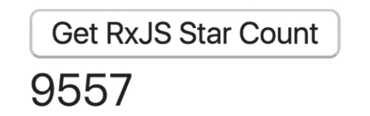

网页应用主要数据源有两个：一个是网页中的DOM事件，另一个就是通过AJAX获得的服务器资源。我们已经知道fromEvent这个操作符可以根据DOM事件产生Observable对象，相应的，RxJS还提供了另一个名为ajax的操作符，根据AJAX请求的返回结果产生Observable对象。
我们用一个简单的例子来演示ajax的用法，假设有下面这样的网页结构：
<div> <button id="getStar">Get RxJS Star Count</button> <div id="text"></div> </div>
当id为getStart的button被点击时，希望能够发送一个AJAX请求去获取GitHub上RxJS项目获得的Start的数量，我们就可以使用ajax这个操作符来访问GitHub提供的API，对应代码如下：
Rx.Observable.fromEvent(
document.querySelector('#getStar'),
'click'
).subscribe(
() => {
Rx.Observable.ajax('https://api.github.com/repos/ReactiveX/rxjs', {responseType: 'json'}).
subscribe(value => {
const starCount = value.response.stargazers_count;
document.querySelector('#text').innerText = starCount;
});
}
);
在上面代码中，通过fromEvent捕捉到getStar按钮的点击事件，产生一个Observable对象，然后在事件响应处理时，通过ajax访问GitHub提供的API，返回的结果中有很多信息，其中的stargazers_count字段就是对应代码库的Star数量。
在网页中点击按钮，ajax请求返回之后，界面显示如图4-12所示。

图4-12 获取Github上Star数界面
在本书写作的时候，RxJS v5的代码库获得了9557个Star，相信当读者看到这本书的时候，这个数量一定更高。
虽然ajax这个操作符能够把AJAX请求和RxJS的数据流串接起来，但是从上面这个例子看来，代码冗长，相比于其他AJAX请求的处理方式真的没有什么优势，这是因为这个例子实在太过简单，简单的应用场景应用RxJS都会显得用力过度。
只有当处理复杂的逻辑时，通过操作符组合实现数据流处理才能彰显威力，现在接触的还是创建类操作符，当接触到其他类型的操作符之后，会看到ajax的巧妙用法。